Թեստ 49
30:00
1. "Ճանապարհային երթևեկության անվտանգության ապահովման մասին" ՀՀ օրենքի համաձայն՝ ընդհանուր օգտագործման տրանսպորտային միջոցի կանգառի կետ է համարվում՝
2. «Ճանապարհային երթևեկության անվտանգության ապահովման մասին» ՀՀ օրենքի համաձայն` հետիոտներին են հավասարեցվում`
3. Ավտոբուսների շահագործումն արգելվում է, եթե՝
4. Տրանսպորտային միջոցների շահագործումն արգելվում է, եթե՝
5. Տվյալ իրադրությունում ունե՞ք արդյոք նշված մանևրի իրավունք:
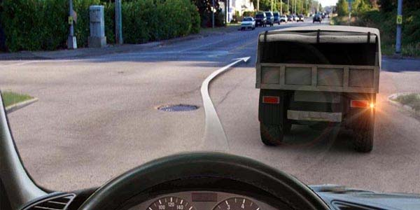
6. Հետևյալ նշանները ցույց են տալիս`
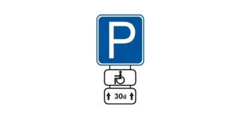
7. Կարմիր ավտոմոբիլը`
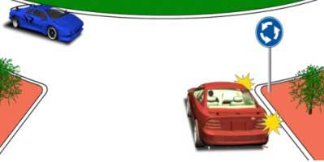
8. Ո՞ր տրանսպորտային միջոցների երթևեկությունն է թույլատրվում լուսացույցի տվյալ ազդանշանի դեպքում:
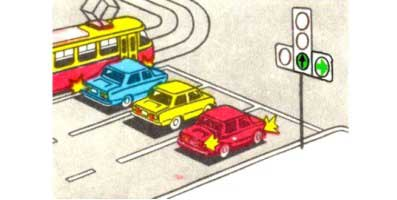
9. Թույլատրվում է արդյոք տվյալ գծանշման առկայության դեպքում զբոսաշրջության երթուղով երթևեկող ավտոբուսի վարորդին մուտք գործել «A» գծանշումով գոտի:
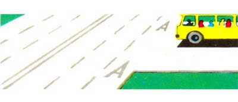
10. Տրանսպորտային միջոցների միջև ի՞նչ հեռավորություն պետք է ապահովի ճկուն կցիչը:
11. Թույլատրվո՞ւմ է թեթև մարդատարի վարորդին հետընթաց վարմամբ մոտենալ ուղևորին կամուրջի վրա
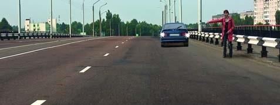
12. Ո՞ր տրանսպորտային միջոցի վարորդը պետք է զիջի ճանապարհը:
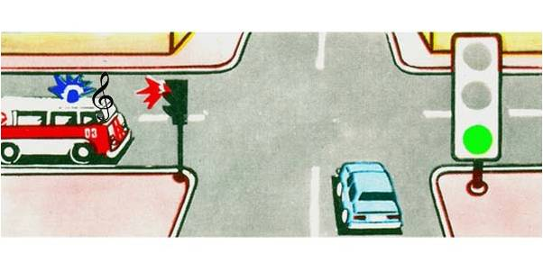
13. Թույլատրվու՞մ է բեռնատար ավտոմոբիլի վարորդին վազանցել ավտոբուսին, որը երթևեկում է 60 կմ/ժ արագությամբ:
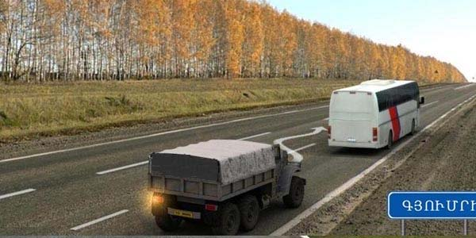
14. Ո՞ր հետագծերով է թույլատրված երթևեկությունը
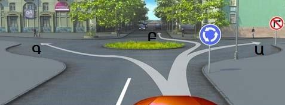
15. Հետադարձը նշված հետագծով
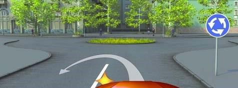
16. Ձախ շրջադարձ կատարելիս տրամվային զիջել
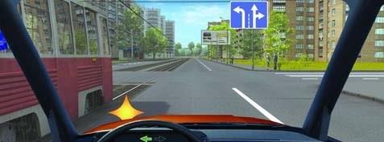
17. Ձախ շրջադարձ կատարելը թույլատրվում է
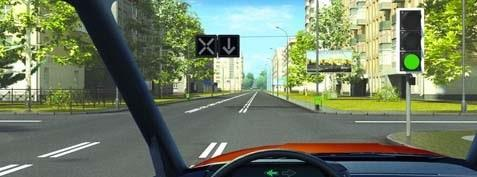
18. Ի՞նչ է ցույց տալիս ընդհատվող գծանշումը
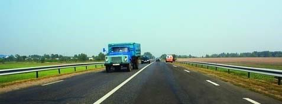
19. Ո՞ր վարորդն է աջ շրջադարձի ազդանշան տալիս
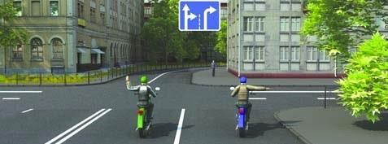